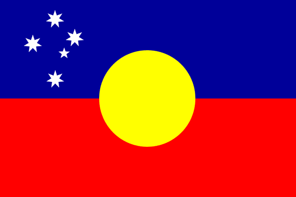
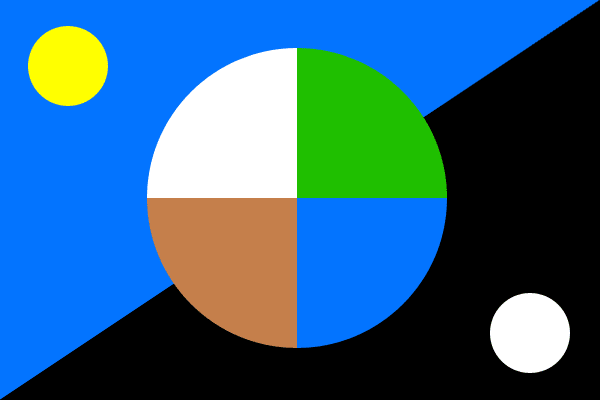
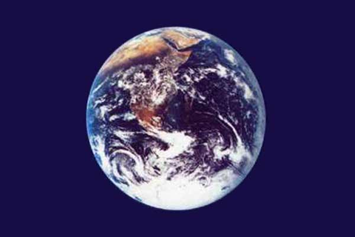
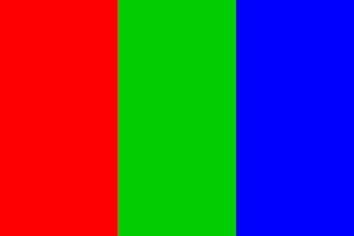

Flag Designsemail Shaun Moss Australia This flag design merges themes from the Aboriginal flag and the current national flag, showing friendship between the different cultures.
For more about Aussie flags, go to AusFlag. Earth This design is a stylised representation of the Earth in space. The four colours of Earth (white, green, brown, and blue) are shown in the form of the quartered cross, which is the astrological symbol of Earth. The upper-left half of the background shows the golden sun in the blue sky of day, and the lower-right half shows the silver moon in the black sky of night. Why do we need a flag for Earth? To fly at the interplanetary Olympics, of course! Well, we have a flag for Mars (shown below), and soon we'll also have a flag for Luna, the Moon. In the future we will want a flag which symbolizes the Earth as a whole. Actually, there's already an Earth flag, which was designed by John McConnell in 1969. It flies at the United Nations and at the North and South Poles:  Read more about it at www.earthflag.net. Mars This flag was designed by Pascal Lee, the NASA geologist who suggested that the Mars Society place their Flashline Mars Arctic Research Station (F-MARS) at Haughton Crater in the Canadian high Arctic. It flies atop the F-MARS station, and has even been into space. The colours red, green, and blue illustrate the phases of terraforming Mars. Currently, the dominant colour of Mars is red (well, orange and brown anyway), due to high levels of iron oxide (rust) on it's surface. As plants are introduced, Mars will become green, and when water flows on the surface, Mars will become a blue planet like Earth. These colours were also used by Kim Stanley Robinson as titles for his famous Red Mars, Green Mars, Blue Mars series. email Shaun Moss Back to Mars Engineering |
{kind=link}
{kind=link}